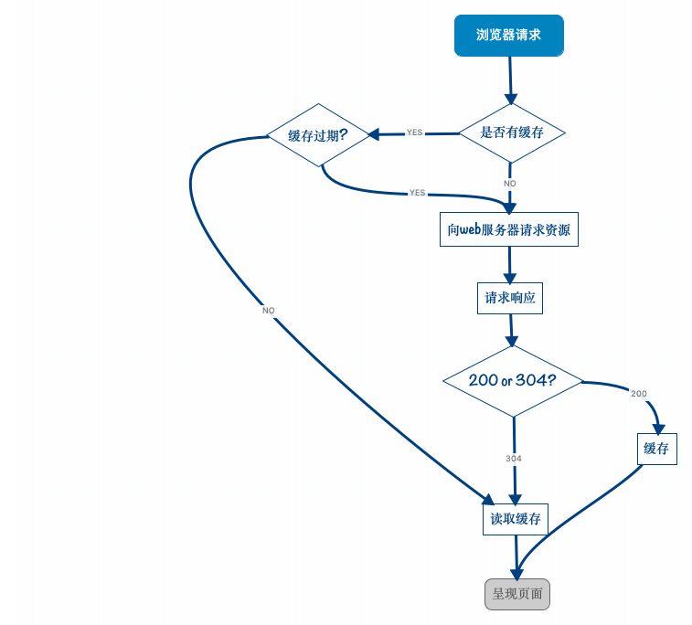
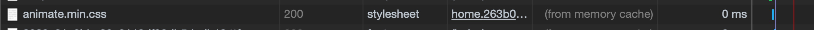
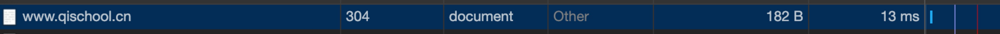
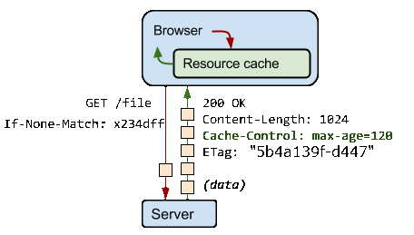

<!DOCTYPE html>
<html lang="zh-Hans-CN">
	<head>
		<meta charset="utf-8">
		<meta http-equiv="X-UA-Compatible" content="IE=edge,chrome=1">
		<meta name="viewport" content="width=device-width, initial-scale=1">
		
		<meta name="author" content="Simeon">
		<meta name="description" content="Simeon 个人微博">
		<meta name="generator" content="Hugo 0.52" />
		<title>浏览器缓存 &middot; Simeon&#39;s blog</title>
		<link rel="shortcut icon" href="https://simeon49.github.io/blog/images/favicon.ico">
		<link rel="stylesheet" href="https://simeon49.github.io/blog/css/style.css">
		<link rel="stylesheet" href="https://simeon49.github.io/blog/css/highlight.css">

		
		<link rel="stylesheet" href="https://simeon49.github.io/blog/css/font-awesome.min.css">
		

		

		
	</head>

    <body>
       <nav class="main-nav">
	
	
		<a href='https://simeon49.github.io/blog/'> <span class="arrow">←</span>Home</a>
	
	<a href='https://simeon49.github.io/blog/posts'>Archive</a>
	<a href='https://simeon49.github.io/blog/tags'>Tags</a>
	<a href='https://simeon49.github.io/blog/categories'>Categories</a>
	<a href='https://simeon49.github.io/blog/about'>About</a>

	

	
</nav>


        <section id="wrapper" class="post">
            <article>
                <header>
                    <h1>
                        浏览器缓存
                    </h1>
                    <h2 class="headline">
                    Jan 16, 2019 00:00
                    · 1787 words
                    · 4 minute read
                      <span class="tags">
                      
                      
                          
                              <a href="https://simeon49.github.io/blog/tags/js">js</a>
                          
                      
                      
                      </span>
                    </h2>
                </header>
                
                <section id="post-body">
                    

<h2 id="什么是浏览器缓存">什么是浏览器缓存</h2>

<p>如今web的应用可以说种类丰富体积庞大, 通常一个入口页面就需要加载非常多的资源, 如果每一次打开页面都从服务器上获取这些资源无疑增加了服务器负担,也使用户等待更长的时间, 于是浏览器缓存出现了, 它的作用就是在用户本地缓存已浏览的网页部分资源, 以便在下次打开时能够直接使用这些资源而不是向服务器重新请求这部分资源.</p>

<blockquote>
<p>根据 HTTP Archive，在排名最高的 300,000 个网站（按照 Alexa 排名）中，所有下载的响应中几乎有半数可由浏览器缓存，这可以大量减少重复的网页浏览和访问。当然，这并不意味着您的特定应用有 50% 的资源可以缓存。一些网站的资源 90% 以上都可以缓存，而其他网站可能有许多私密或时效要求高的数据根本无法缓存。</p>
</blockquote>

<h2 id="资源加载过程">资源加载过程</h2>

<p></p>

<ol>
<li><p>浏览器在加载资源时,先根系这个资源的http header 判断是否命中强缓存, 如果命中则直接冲缓存中加载资源. <strong>命中强缓存后,浏览器不会像服务器发送任何请求,直接使用本地缓存的资源</strong></p></li>

<li><p>当强缓存没有命, 浏览器会向服务器发送请求, 服务器依据资源的http header 验证这个资源是否命中协商缓存, 如果协商缓存命中, 则服务器会返回这个请求但不会返回这个资源的数据(http response 304), 否则服务器会返回资源的数据(http responce 200)</p></li>
</ol>

<h2 id="缓存原理">缓存原理</h2>

<ol>
<li>浏览器首次与服务器请求资源时, 服务器返回资源的同时还会在response的header上添加用于描述响应的内容类型、长度、缓存指令、验证令牌等的header, 如下图(缓存最多120s, 并提供一个验证令牌(&ldquo;x234dff&rdquo;))</li>
</ol>

<p></p>

<ol>
<li>浏览器在接收到这个资源后，会把这个资源连同所有response header一起缓存下来</li>
<li>浏览器如果再请求这个资源，会先从缓存中寻找，找到这个资源后，根据它第一次的请求时间和Cache-Control设定的有效期，计算出一个资源过期时间，再拿这个过期时间跟当前的请求时间比较，如果请求时间在过期时间之前(即120s内)，就能命中缓存(<strong>强缓存</strong>) 浏览器加载缓存资源后结束.</li>
</ol>

<p></p>

<ol>
<li>浏览器向服务器发送协商请求(请求头中包含 If-None-Match: x234dff 该值与上一次请求的响应中Etag相同), 如果资源在服务器端未改变, 怎服务器返回(304 notModified)响应</li>
</ol>

<p></p>

<p></p>

<ol>
<li>如果资源在服务器端发生了改变, 则服务器会返回(200 OK)响应,同时返回新的资源数据, 浏览器收到数据后会更新资源的缓存与Etag等 response header信息</li>
</ol>

<p></p>

<h3 id="expries与cache-control">Expries与Cache-Control</h3>

<p>Expires(http1.0)或Cache-Control(http1.1)是http response header 的标准头信息, 它们都表示资源在客户端缓存的有效期</p>

<blockquote>
<p>Expries是http1.0中提出的, 使用绝对时间,例如: &ldquo;<code>Expires: Sun, 07 Jan 2029 23:58:48 GMT</code>&rdquo; 由于服务器时间可能与客户端存在较大的时间差等问题,在http1.1提出了新的header Cache-Control, 它有多个指令可供使用, 最常见的如下:</p>

<table>
<thead>
<tr>
<th>指令</th>
<th align="right">说明</th>
</tr>
</thead>

<tbody>
<tr>
<td><em>no-store</em></td>
<td align="right">直接禁止游览器缓存数据，每次用户请求该资源，都会向服务器发送一个请求，每次都会下载完整的资源。</td>
</tr>

<tr>
<td><em>no-cache</em></td>
<td align="right">不使用本地缓存。需要使用缓存协商，先与服务器确认返回的响应是否被更改，如果之前的响应中存在ETag，那么请求的时候会与服务端验证，如果资源未被更改，则可以避免重新下载</td>
</tr>

<tr>
<td><em>max-age=86400</em></td>
<td align="right">浏览器以及任何中间缓存均可将响应（如果是“public”响应）缓存长达 1 天（60 秒 x 60 分钟 x 24 小时）。</td>
</tr>

<tr>
<td><em>private, max-age=600</em></td>
<td align="right">客户端的浏览器只能将响应缓存最长 10 分钟（60 秒 x 10 分钟）。</td>
</tr>
</tbody>
</table>

<p><strong>注意：如果cache-control与expires同时存在的话，cache-control的优先级高于expires</strong></p>
</blockquote>

<h3 id="last-modified-if-modified-since-与-etag-if-none-match">【Last-Modified，If-Modified-Since】与 【ETag、If-None-Match】</h3>

<p>这两组都是http header的标准头信息, 用于协商缓存,与Expries 一样 【Last-Modified，If-Modified-Since】使用的是绝对时间, Last-Modified 是服务器最近一次响应时添加在 response header 中的信息 如: &ldquo;<code>Last-Modified: Sun, 07 Jan 2029 23:58:48 GMT</code>&rdquo;, 在协商请求时会在请求头中添加 If-Modified-Since 信息 如:  &ldquo;<code>If-Modified-Since: Sun, 07 Jan 2029 23:58:48 GMT</code>&rdquo; 其值与上一次服务返回的 Last-Modified 值相同, 用于帮助服务器判断资源是否需要重新下发. 这组标准头存在的问题与Expries一样, 所以就有了 【ETag、If-None-Match】他们使用的是资源的指纹, 但资源发生变化时对应的指纹才会变化</p>

<h2 id="缓存策略">缓存策略</h2>

<p>这篇<a href="https://www.zhihu.com/question/20790576">文章</a> 有很好的指导意义</p>

                </section>
            </article>

            

            
                <div id="disqus_thread"></div>
<script type="text/javascript">
    var disqus_shortname = 'simeon49';

     
    (function() {
        var dsq = document.createElement('script'); dsq.type = 'text/javascript'; dsq.async = true;
        dsq.src = '//' + disqus_shortname + '.disqus.com/embed.js';

        
        var disquesLoaded = false;
        dsq.onload = function () {
            disquesLoaded = true;
        };
        (document.getElementsByTagName('head')[0] || document.getElementsByTagName('body')[0]).appendChild(dsq);

        setTimeout(() => {
            if (!disquesLoaded) {
                alert('加载disques 失败!');
            }
        }, 3000);

    })();
</script>
<noscript>Please enable JavaScript to view the <a href="https://disqus.com/?ref_noscript">comments powered by Disqus.</a></noscript>
</div>

            

            
                <ul id="post-list" class="archive readmore">
    <h3>Read more</h3>

    
    
    
        <li>
            <a href="/blog/posts/2019-02-12-%E5%BC%80%E6%BA%90%E8%AE%B8%E5%8F%AF%E8%AF%81gplbsdmitmozillaapache%E5%92%8Clgpl%E7%9A%84%E5%8C%BA%E5%88%AB/">开源许可证GPL、BSD、MIT、Mozilla、Apache和LGPL的区别<aside class="dates">Feb 12 2019</aside></a>
        </li>
    
        <li>
            <a href="/blog/posts/2019-01-26-%E4%BC%98%E7%BE%8E%E4%BB%A3%E7%A0%81-%E5%8E%9F%E5%9E%8B/">优美代码-原型<aside class="dates">Jan 26 2019</aside></a>
        </li>
    
        <li>
            <a href="/blog/posts/2019-01-25-%E4%BC%98%E7%BE%8E%E4%BB%A3%E7%A0%81-%E6%AD%A3%E4%BA%A4/">优美代码-正交<aside class="dates">Jan 25 2019</aside></a>
        </li>
    
        <li>
            <a href="/blog/posts/2019-01-24-%E4%BC%98%E7%BE%8E%E4%BB%A3%E7%A0%81-%E4%BD%BF%E7%94%A8%E5%86%97%E4%BD%99%E5%AD%97%E6%AE%B5%E5%A4%84%E7%90%86%E9%97%AE%E9%A2%98/">优美代码-使用冗余字段处理问题<aside class="dates">Jan 24 2019</aside></a>
        </li>
    
        <li>
            <a href="/blog/posts/2019-01-23-%E4%BA%A4%E6%B5%81%E6%8A%80%E5%B7%A7/">交流技巧<aside class="dates">Jan 23 2019</aside></a>
        </li>
    
        <li>
            <a href="/blog/posts/2019-01-22-%E4%BB%8E%E8%BE%93%E5%85%A5url%E5%88%B0%E9%A1%B5%E9%9D%A2%E5%B1%95%E7%A4%BA%E5%88%B0%E5%BA%95%E5%8F%91%E7%94%9F%E4%BA%86%E4%BB%80%E4%B9%88/">从输入url到页面展示到底发生了什么<aside class="dates">Jan 22 2019</aside></a>
        </li>
    
        <li>
            <a href="/blog/posts/2019-01-15-%E4%B8%80%E9%81%93%E7%A5%9E%E5%A5%87%E7%9A%84%E5%89%8D%E7%AB%AF%E9%99%84%E5%8A%A0%E9%A2%98/">一道神奇的前端附加题<aside class="dates">Jan 15 2019</aside></a>
        </li>
    
        <li>
            <a href="/blog/posts/2019-01-14-%E8%99%9A%E6%8B%9Fdom/">虚拟DOM<aside class="dates">Jan 14 2019</aside></a>
        </li>
    
        <li>
            <a href="/blog/posts/2018-12-29-%E7%AE%80%E5%8D%95%E7%9A%84%E5%89%8D%E7%AB%AFmvc%E5%AE%9E%E7%8E%B0/">简单的前端MVC实现<aside class="dates">Dec 29 2018</aside></a>
        </li>
    
        <li>
            <a href="/blog/posts/2018-12-28-js%E4%B8%AD%E7%9A%84object.defineproperty/">js中的神奇方法Object.defineProperty<aside class="dates">Dec 28 2018</aside></a>
        </li>
    
</ul>

            

            <footer id="footer">
    
        <div id="social">

	
	
    <a class="symbol" href="https://github.com/simeon49">
        <i class="fa fa-github-square"></i>
    </a>
    


</div>

    
    <p class="small">
    
       © Copyright 2019 <i class="fa fa-heart" aria-hidden="true"></i> Simeon
    
    </p>
    
</footer>

        </section>

        <script src="https://simeon49.github.io/blog/js/jquery-3.3.1.min.js"></script>
<script src="https://simeon49.github.io/blog/js/main.js"></script>
<script src="https://simeon49.github.io/blog/js/highlight.min.js"></script>
<script>hljs.initHighlightingOnLoad();</script>


<script>
var baiduAnalytics = '74fafdde017951e1df78c761e7c017bc';
var _hmt = _hmt || [];
(function() {
  var hm = document.createElement("script");
  hm.src = "https://hm.baidu.com/hm.js?" + baiduAnalytics;
  var s = document.getElementsByTagName("script")[0];
  s.parentNode.insertBefore(hm, s);
})();
</script>


    </body>
</html>
